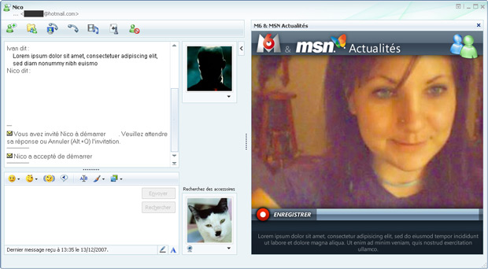

Work
After almost 15 years working in the field, it is hard to sort all the projects I've been working on. Below are samples of some of the projects I have been working on lastly. For more information, feel free to contact me on ivan (dot) touzeau (at) gmail (dot) com
node.js development JS
Several BTB tools. Demos on demand

OA Proto iOS
OA Proto is an iPad application prototype asked by BNF at is&a bloom for sharing annotations on medieval manuscripts. Built to check usability and interest from researchers working in that field. Exports Open Annotation format.
Source code available here
Baby Painting Box iOS
When drawing, babies use complex techniques that involves their 10 fingers simultaneously. Hence this application that handles a 10 fingers multitouch.
Painting cans can be moved around. 3 strokes, saves to the iphone gallery
Universal application, retina support.
Work in progress.

Photo Trippr iOS
This free app makes you travel inside Flickr, by browsing its content, by keywords or tags.
It was made for is&a bloom to test a few OpenGL features and perform tests on some 2D animations.
Download it on iTunesLook Hunter iOS
This app was made for the fashion social network moodlook, to let users share their looks on the website.
Uses REST APIs for authentication and data upload.

Public Sénat iOS
Application made for Public Sénat website.
Browse most recent articles, most popular ones, search by keywords, social sharing.
Download it on iTunes
Keep Cool iOS
Application made for Keep Cool fitness centres. Finds the nearest centres from your position, fitness recipes, BMI ( Body Mass Index) computation.
Uses a simple XML file with a timestamp to update the local database : centres, team for each centre, recipes.
Download it on iTunesChacun son rêve Flash
Flash web site made for Bonne compagnie and Canal Satellite. Allows candidates to subscribe for a TV show using a 3D interface.
Uses Away3D engine, Google and Yahoo reverse geolocation.
View
Webcam Video recording application Flash
Flash plugin MSN Messenger app made for MSN News. and for Public Senat. Used to allow msn users / PS visitors to ask questions using their webcam.
The app consisted in a flash web client, a flash user interface used for administration and moderation, and a wowza media server setup on a dedicated server.
Uses Wowza Media Server for the video recording and broadcasting. ffmpeg was used for the video format conversion.

